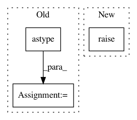

9e35d1e5ebdf1c379b6c84c642fa164a9fa22d9a,tests/attacks/test_copycat_cnn.py,TestCopycatCNN,setUpClass,#Any#,65
Before Change
(x_train, y_train), (_, _), _, _ = load_dataset("mnist")
cls.x_train = x_train[:NB_TRAIN].astype(ART_NUMPY_DTYPE)
cls.y_train = y_train[:NB_TRAIN].astype(ART_NUMPY_DTYPE)
def setUp(self):
master_seed(1234)
After Change
@classmethod
def setUpClass(cls):
super().setUpClass()
@unittest.skipIf(tf.__version__[0] == "2", reason="Skip unittests for TensorFlow v2.")
def test_tensorflow_classifier(self):
In pattern: SUPERPATTERN
Frequency: 3
Non-data size: 3
Instances
Project Name: IBM/adversarial-robustness-toolbox
Commit Name: 9e35d1e5ebdf1c379b6c84c642fa164a9fa22d9a
Time: 2020-01-16
Author: beat.buesser@ie.ibm.com
File Name: tests/attacks/test_copycat_cnn.py
Class Name: TestCopycatCNN
Method Name: setUpClass
Project Name: instacart/lore
Commit Name: 8d8d007fa2ffdf2a7f8f0a5ea596db84f942339e
Time: 2017-12-12
Author: montanalow@users.noreply.github.com
File Name: lore/encoders.py
Class Name: Token
Method Name: transform
Project Name: IBM/adversarial-robustness-toolbox
Commit Name: c7585e649aca88cf9e21eb754469630748bb1cfc
Time: 2020-01-27
Author: beat.buesser@ie.ibm.com
File Name: tests/attacks/test_knockoff_nets.py
Class Name: TestKnockoffNets
Method Name: setUpClass